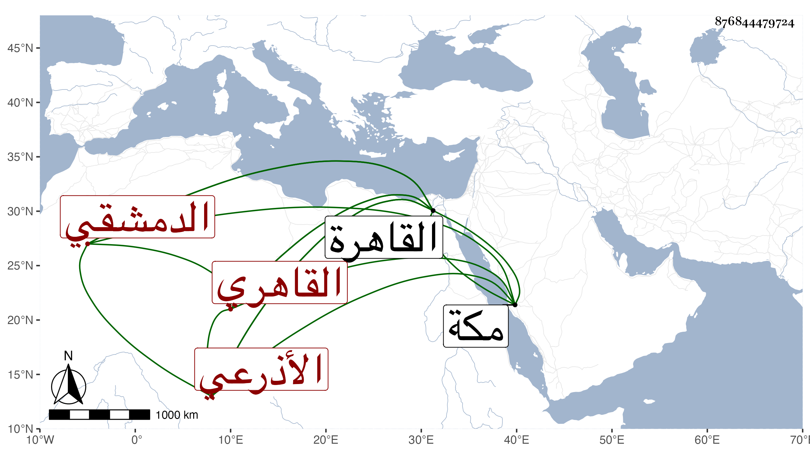

0902Sakhawi.DawLamic.ITO20230111-ara1.EIS1600.876844479724
Biography ID: 876844479724
177
محمد بن عبد الله بن حسن بن علي بن محمد بن عبد الرحمن البدر بن الجمال الأذرعي الأصل الدمشقي القاهري الماضي أبوه وجده وعمه الإمام الشهاب أحمد . ولد في ربيع الأول سنة أربع وعشرين وثمانمائة ونشأ فقرأ القرآن ، وقدم القاهرة مرارا وسمع بها رفيقا للخيضري على المحب بن نصر الله الحنبلي في النسائي وعلى البدر بن روق العلم للمرهبي وعلى شيخنا في آخرين ، وقطنها وقتا وتكسب بسوق الهرامزة وحج غير مرة . وكانت وفاته بمكة في ذي القعدة سنة ثمان وثمانين بعد أن حدث بالقاهرة بعض المبتدئين .
